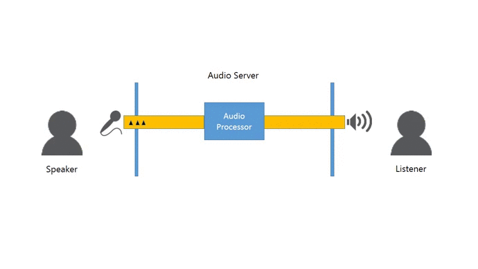
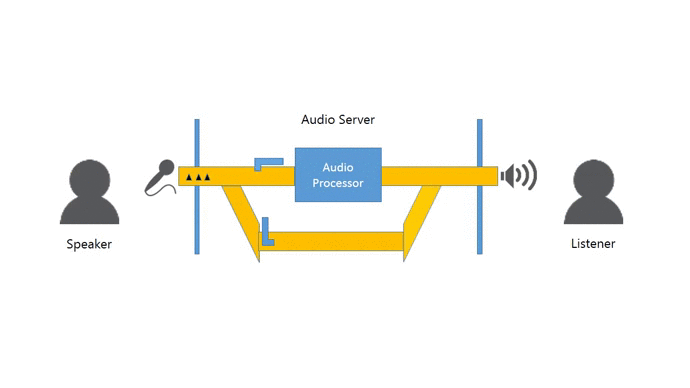

Image courtesy of Family Handyman
Bypass line
Plumbing the depths of Quality of Service (QOS)
Piece of cake
It all started with a simple task - replace the filter on a whole house water filter. The instructions were simple enough: shut off the water to the house at the main, turn the filter housing counter-clockwise, remove the old filter, insert the new filter, turn the filter housing clockwise, turn on the water at the main, done. If you haven't guessed already then I'll tell you. It did not go that well. Everything went well until the "remove old filter". The housing on the filter creaked and groaned and then stuck. No, stuck implies it would someday budge. The housing somehow fused itself to the filter in a bond unknown to modern science. Oh well, maybe we don't need a new water filter. The old one isn't that dirty. Maybe we can just leave it and get sub-obtimal but somehwat filtered water. Now it gets interesting. Turning the water main back on and pssssshhhhhh a leak between the filter top and the housing. Shutting off the water main relieves the immediate urgency but now I am in hot errr cold water.
Operating under pressure
If this doesn't sound familiar let me convert it to the software world. I went to implement a relatively simple change in production. It had been two years since the last release and it was all manual steps but at least I had documentation for it. Something went wrong during the maintenance window and now the production server is broken. The customers aren't happy because service is down and business is not happy because they lose money when service is down. The pressure to fix things at this point is what can lead to hacks and duct tape or worse. The same optimism that let us assume would could build something is played against us when it fails. Few people liking being under this type of pressure but designing for anything but the happy path costs money and take more time. The problem is things fail. The more complex the system the more amazing ways it will find to fail. Good plumbers and engineers design for this and so can developers.
Happiness is running water
Let make this more concrete. You are deploying a voice chat server. People talk at their computers and your server manages to take the audio from one computer and pass it to another so someone can listen to your golden voice. Your server also does some cool things like in an audio processor that applies effects and runs filters on the audio to clean it up. Aren't you clever. Only you assumed the audio processor would always work. Your amazing algorithms could never have an issue and the sun will always shine on your server. Nope. Let's see what happens when your audio processor goes out to lunch.

Service outage when issue occurs
Here's the play by play:
- Some voice data goes through your server. It gets enhanced just like you designed it. Did I mention how clever you are?
- The audio processor breaks (turns red).
- Your voice chat room goes silent. Users look around; blink twice; then they go off for a soda as the audio of their laughter fall silently to the floor.
- The operations team yells at you for not being as clever as they want you to be.
Now let's imagine you had this happen in production and after operations yelled at you (hey, it's a feedback loop right?) you asked the business owner what he though was a reasonable thing to do when the audio processor fails. Not what to do if it fails but what to do when it fails. After a rousing discussion about cost and ROI you settle on simply acting as a dumb pipe. Ok, not completely dumb. You level the audio so no one gets their ears blown out when someone drops their laptop during the chat but compared to the audio processor it is pretty dumb. Bomb-proof would be a good word for it. Anyway, after some more tweaking the system can now detect that the audio processor is having problems and routes incoming audio to the bomb-proof dump pipe.

Reduced quality of service when issue occurs
Let's see how your voice chat is fairing:
- Some voice data goes through your server. It gets enhanced just like you designed it. Yes, you are a genius. *cough* *self-esteem issues* *cough*
- The audio processor breaks (turns red).
- Your voice chat users barely notice the interuption. Bob is slightly perplexed as to why he doesn't sound like Darth Vader in the chat anymore but everyone else is happy about it.
- You and operations work out the issue (service restart something or other).
- Everyone groans as Bob once again sounds like Darth Vader.
- The business owner showers you and operations with praise for doing such an amazing job handling that failure.
Lessons learned
I learned some valuable lessons from my water filter fiasco.
Releasing early and often could have mitigated this whole scenario. Replacing the water filter every six months instead of every two years would have surfaced the early warning signs of impending failure and might have prevented a catastrophic failure.
Having an option to bypass the problem while maintaining some service would prevent extra inspenses incurred from urgent fixes and reduce reactive short term decisions.
At the end of the day everyone wants to be happy. Customer want to user your service, the business wants happy customers, and you want painless releases.
Planning for failure in a complex system is a must.
Things will fail at the worst moment.
Be prepared and be the hero.
Further resources
The Circuit Breaker Pattern would be helpful in implementing failure detection. The book Release It! goes into more detail about system failure. I credit Family Handyman with getting me through the plumbing issue and showing me how simple a bypass line is in practice. The bypass line looks eerily similar to the enterprise integration pattern called Detour. Must be a coincidence.